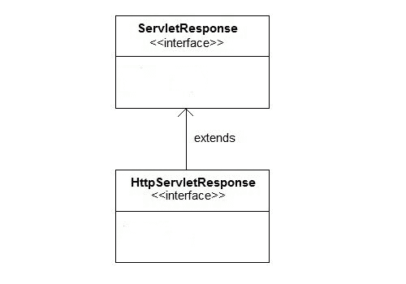

ServletResponse简介
原文：https://www.studytonight.com/servlet/servlet-response.php
Servlet API 提供了两个重要的接口 ServletResponse 和httpersvletresponse来协助向客户端发送响应。
服务响应的一些重要方法
| 方法 | 描述 |
| PrintWriter getWriter() | 返回一个 PrintWriter 对象，该对象可以向客户端发送字符文本。 |
| 作废setBufferSize(int size) | 设置响应正文的首选缓冲区大小 |
| 作废setContentLength(int len) | 设置响应中内容主体的长度在 HTTP servlets 中，此方法设置 HTTP 内容长度头 |
| 作废setContentType(String type) | 在发送响应之前，设置发送给客户端的响应的内容类型。 |
| 作废setBufferSize(int size) | 设置响应正文的首选缓冲区大小。 |
| 布尔值 isCommitted() | 返回一个布尔值，指示响应是否已提交 |
| 作废setLocale(Locale loc) | 如果尚未提交响应，则设置响应的区域设置。 |
HttpServletResponse 接口
HttpServletResponse 接口添加了与 HTTP 响应相关的方法。它扩展了 ServletResponse 接口。HttpServletResponse 的对象是在 servlet 容器中创建的。

HttpServletResponse 的一些重要方法
| 方法 | 描述 |
| 作废addCookie(Cookie cookie) | 将指定的 cookie 添加到响应中。 |
| 作废sendRedirect(String location) | 使用指定的重定向位置 URL 向客户端发送临时重定向响应，并清除缓冲区 |
| int getStatus() | 获取此响应的当前状态代码 |
| 弦getHeader(String name) | 获取具有给定名称的响应头的值。 |
| 作废setHeader(String name, String value) | 使用给定的名称和值设置响应头 |
| 作废setStatus(int sc) | 设置此响应的状态代码 |
| 作废sendError(int sc, String msg) | 使用指定的状态向客户端发送错误响应，并清除缓冲区 |
Eclipse 上的 HttpServletResponse 接口示例
为了创建一个 HttpServletResponse 接口，下面是程序的目录结构:

以下是创建程序的步骤。
第一步:通过点击文件= >新建= >动态网页项目在 eclipse 上创建一个动态项目

第二步:现在创建一个 HTML 文件。
右键单击项目，然后单击 HTML 文件。给出文件名，然后点击完成按钮。

并写出下面的代码。
<!DOCTYPE html>
<html>
<head>
<meta charset="ISO-8859-1">
<title>studytonight.com</title>
</head>
<body>
<form align="center" action="display" method="get">
<h3>studytonight.com</h3>
<hr>
Enter User name: <input type="text" name="val1"><br><br>
Enter Password: <input type="password" name="val2" ><br><br>
<input type="submit" value="login">
</body>
</html>
第三步:现在在 web.xml 文件中添加下面的代码。
web.xml 文件是一个部署描述符。这里有所有的配置。
<?xml version="1.0" encoding="UTF-8"?>
<web-app xmlns:xsi="http://www.w3.org/2001/XMLSchema-instance" xsi:schemaLocation="http://xmlns.jcp.org/xml/ns/javaee http://xmlns.jcp.org/xml/ns/javaee/web-app_4_0.xsd" id="WebApp_ID" version="4.0">
<display-name>ServletResponse</display-name>
<servlet>
<servlet-name>abc3</servlet-name>
<servlet-class>demo4</servlet-class>
</servlet>
<servlet-mapping>
<servlet-name>abc3</servlet-name>
<url-pattern>/display</url-pattern>
</servlet-mapping>
</web-app>
步骤 4:现在接下来创建一个 servlet。为此创建一个类。给出包名和类名。


在类文件中添加下面的代码。
演示 4.java
import javax.servlet.http.*;
import javax.servlet.*;
import java.io.*;
public class demo4 extends HttpServlet{
public void doGet(HttpServletRequest req,HttpServletResponse res)
throws ServletException,IOException
{
res.setContentType("text/html");
PrintWriter pwriter=res.getWriter();
String uname=req.getParameter("val1");
String pw=req.getParameter("val2");
pwriter.println("User Details Page:");
pwriter.println("Hello "+uname);
pwriter.println("Your Password is **"+pw+"**");
pwriter.close();
}
}
现在，运行代码
要运行代码，右键单击项目并选择运行方式= >在服务器上运行。

下面是 demo4.html 页面。填写所有字段，然后单击登录按钮登录 servlet 页面。

这是 servlet 页面。